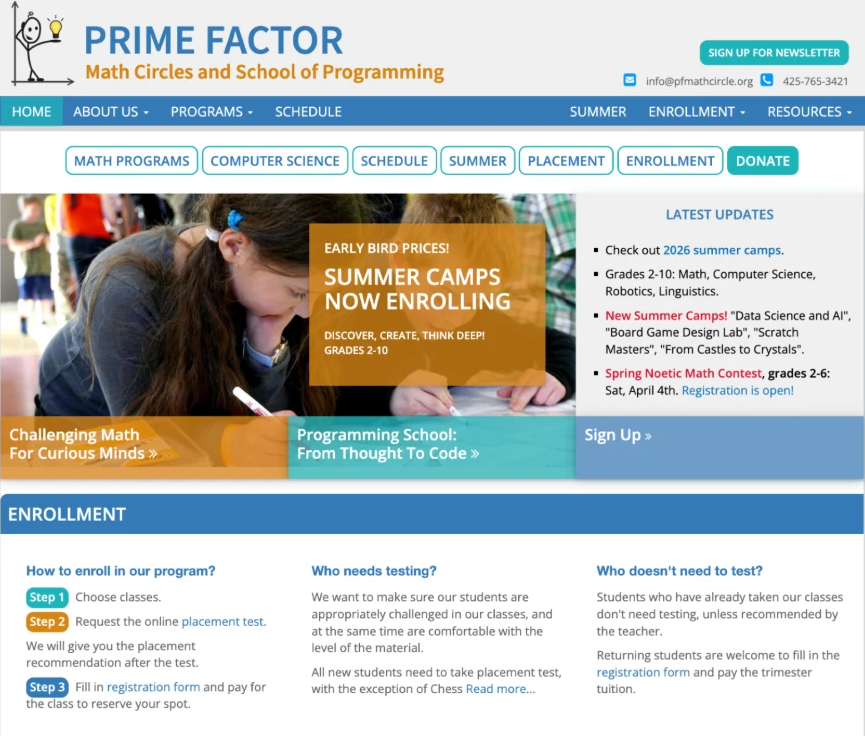
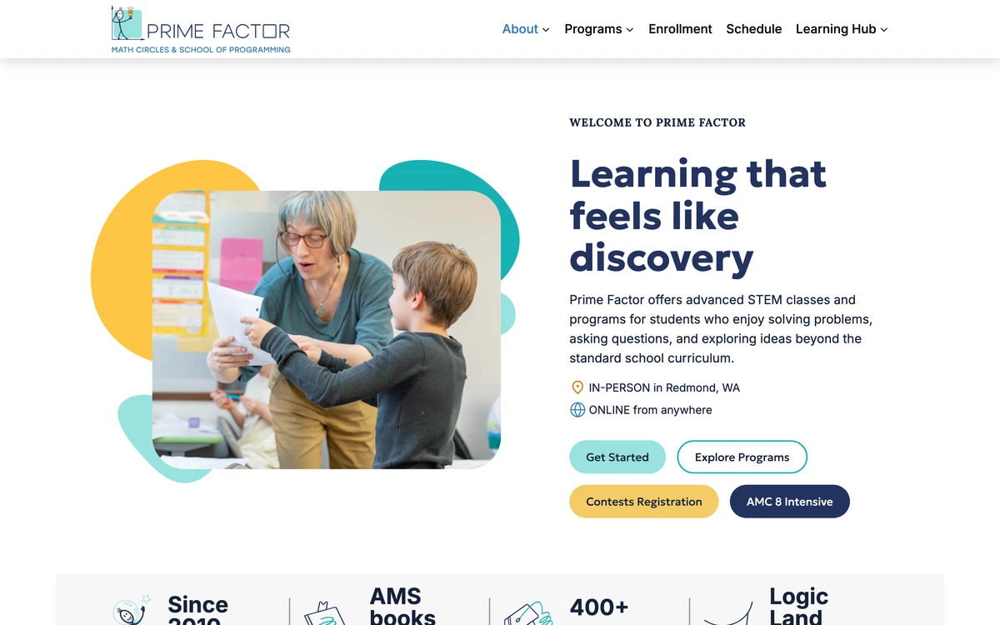
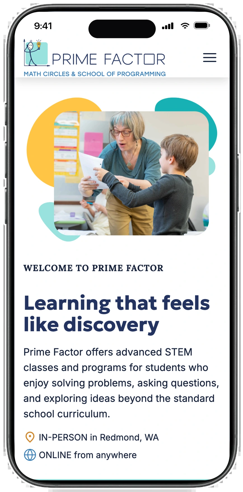
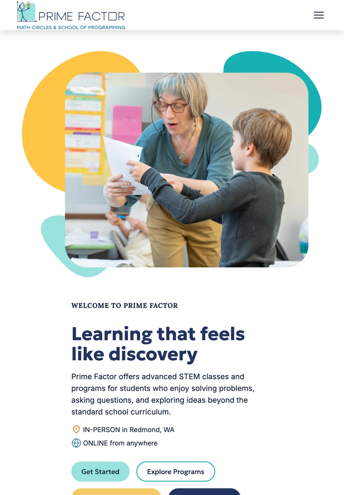
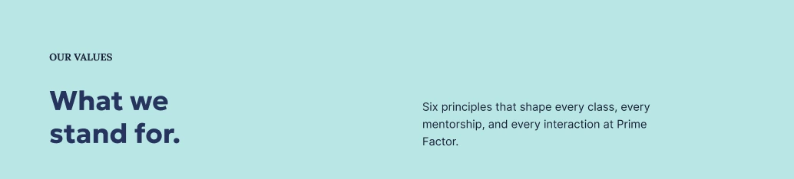
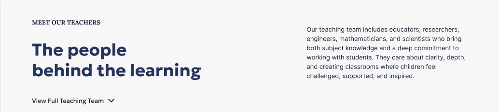
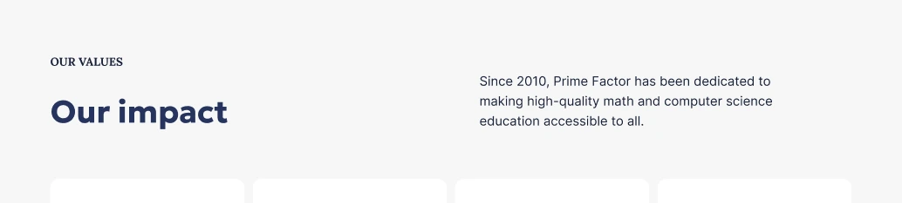
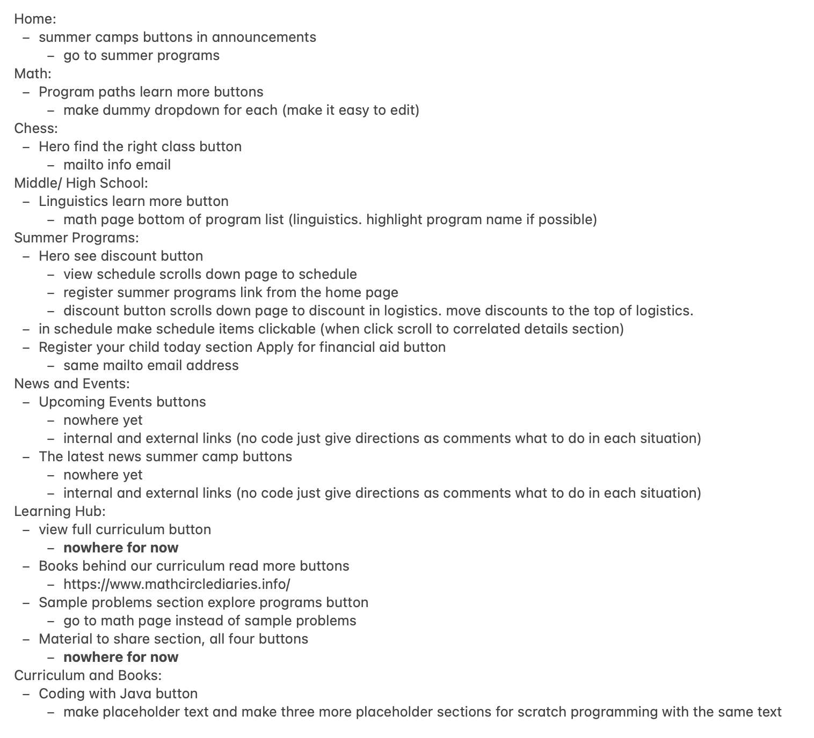

Developing a local school's website under strict constraints
In three weeks I singlehandedly rebuilt a 16-page website for Prime Factor Math Circles, a children's nonprofit after-school program.
Context
Where Prime Factor's website fell short
- Outdated UI
- Crowded layout
- Confusing navigation
- Screen size incompatibility
The school was preparing to announce their new program schedule for the 2026-2027 school year in August, but their website held them back.

Problem
Prototype to page
When the founders of Prime Factor approached me, they had a fully developed website prototype built by a team of designers. They now needed a developer to implement the design and make the website live within the month so they could review and finalize the website before the start of the new school year.
Research
Understanding needs and pain points
I reviewed the existing website and conducted a series of interviews with the founders and academic director to understand the goals of the website, existing issues, and how the new Figma prototype addressed them.
From the beginning, they emphasized accessible and responsive design with mobile, tablet, and desktop compatibility.
Early Development
Deciding on the approach
Considering the tight deadline, I used Claude to speed up development. I had never used it for web development, so the first few days I experimented with different ways to transform each Figma page into code.
After the first few pages, I streamlined the process and reduced the build time by 59% for subsequent pages.
avg per page for the first three pages (home, about, and contact)
avg per page for the remaining 13
More Research
Understanding the specs
After builing the first two website pages, I met with the client again to make sure they were happy with the result. We realized that the prototype was missing designs for tablets, so I worked with them to combine the existing desktop and mobile designs to create a tablet view.



Development
Inconsistencies in design
As I worked on the remaining pages, I noticed inconsistencies in the prototype design elements.
Buttons
Spacing



I revised many instances of these inconsistencies to create a cohesive and unified design.
Development
Button routing
Most buttons in the prototype lacked routing. The client was unsure of the final routing when I began development, so I left it until all pages were done.
Once I began routing, it became extremely difficult to track the changes. Some buttons were rerouted multiple times based on how I or the client interpreted the website flow. For some, both the client and I were unsure of where to route. There were many external links for registration, payment, textbooks and old class materials.
Through close communication, I designed each route how the client envisioned.

Outcome
Result
After three weeks, all pages were completed, and I handed them over to the client for review. They wanted to wait until August in case they needed my help with any changes or maintenance instructions. I made sure to provide them with detailed instructions on pages that required frequent updates.
In August, they launched their redesigned website. You can check it out here.
Outcome
Reflection
Using LLMs efficiently
Testing out different prompting strategies allowed me to optimize page development, while learning how to word prompts based on specific design needs.
Persevering under time pressure
When I took on this project, it was difficult to gauge how long it would take me because I had never built such a large website before, or used LLMs for development. Completing it in just a few weeks gave me confidence in managing complex projects, and a clear understanding of my production speed.
Being thorough in research
I felt like at times, I wasn't efficient in my research which forced me to repeatedly follow up on specifics later. If I could do one thing differently, I would structure my research better and dive deeper in my questions to feel more confident during development.